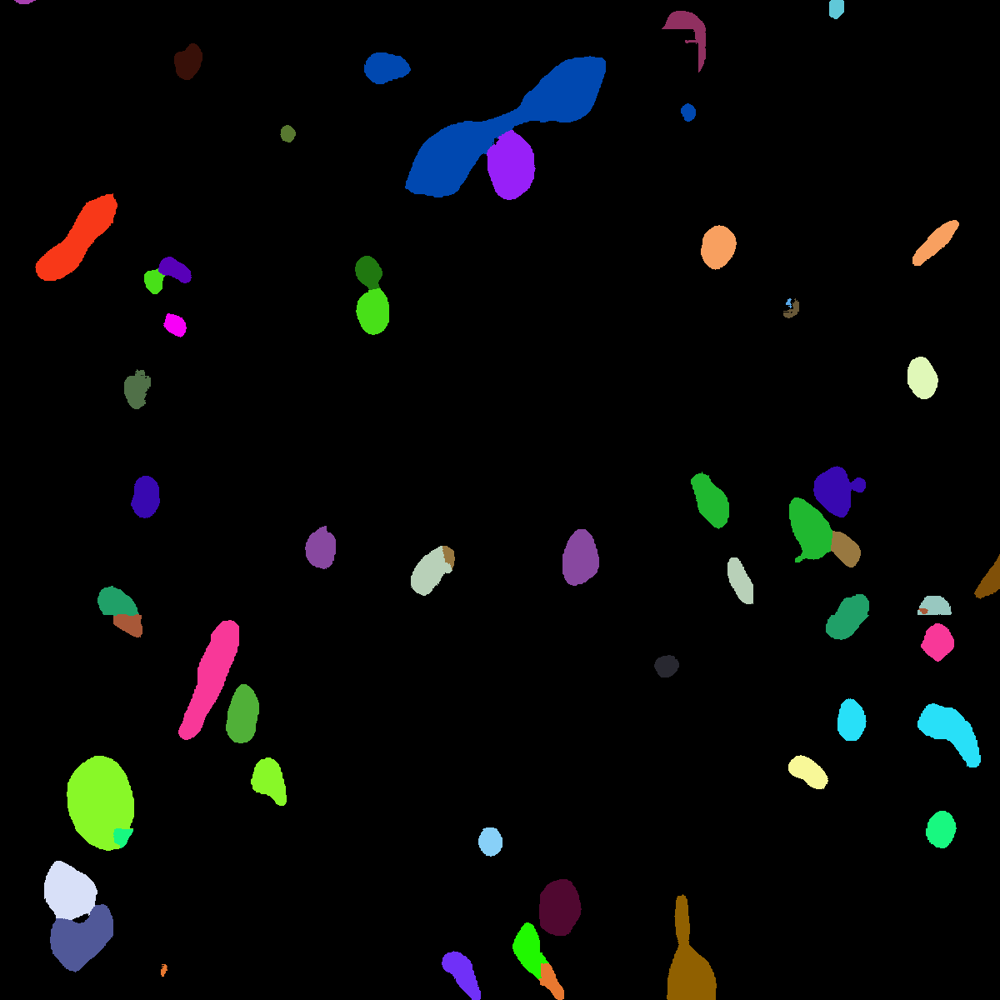

MitoEM dataset: large-scale 3d mitochondria instance segmentation¶
This tutorial describes how to reproduce the results reported in our paper, concretely
U2D-BC to make instance segmentation of mitochondria in electron microscopy (EM) images:
@inproceedings{wei2020mitoem,
title={MitoEM dataset: large-scale 3D mitochondria instance segmentation from EM images},
author={Wei, Donglai and Lin, Zudi and Franco-Barranco, Daniel and Wendt, Nils and Liu, Xingyu and Yin, Wenjie and Huang, Xin and Gupta, Aarush and Jang, Won-Dong and Wang, Xueying and others},
booktitle={International Conference on Medical Image Computing and Computer-Assisted Intervention},
pages={66--76},
year={2020},
organization={Springer}
}
Problem description¶
The goal is to segment and identify automatically mitochondria instances in EM images. To solve such task pairs of EM images and their corresponding instance segmentation labels are provided. Below a pair example is depicted:

MitoEM-H tissue image sample.¶ |

Its corresponding instance mask.¶ |
MitoEM dataset is composed by two EM volumes from human and rat cortices, named MitoEM-H and MitoEM-R respectively. Each
volume has a size of (1000,4096,4096) voxels, for (z,x,y) axes. They are divided in (500,4096,4096) for
train, (100,4096,4096) for validation and (500,4096,4096) for test. Both tissues contain multiple instances
entangling with each other with unclear boundaries and complex morphology, e.g., (a) mitochondria-on-a-string (MOAS)
instances are connected by thin microtubules, and (b) multiple instances can entangle with each other.
Data preparation¶
You need to download MitoEM dataset first:
The EM images should be 1000 on each case while labels only 500 are available. The partition should be as follows:
Training data is composed by
400images, i.e. EM images and labels in[0-399]range. These labels are separated in a folder calledmito-train-v2.Validation data is composed by
100images, i.e. EM images and labels in[400-499]range. These labels are separated in a folder calledmito-val-v2.Test data is composed by
500images, i.e. EM images in[500-999]range.
Once you have donwloaded this data you need to create a directory tree as described in Data preparation.
Configuration file¶
To reproduce the exact results of our manuscript you need to use mitoem.yaml configuration file.
Then you need to modify TRAIN.PATH and TRAIN.MASK_PATH with your training data path of EM images and labels respectively. In the same way, do it for the validation data with VAL.PATH and VAL.MASK_PATH and for the test setting TEST.PATH.
Results¶
The results follow same structure as explained in Results. The results should be something like the following:
|
MitoEM-H train sample’s GT.¶ |

MitoEM-H train prediction.¶ |
MitoEM challenge submission¶
There is a open challenge for MitoEM dataset: https://mitoem.grand-challenge.org/
To prepare .h5 files from resulting instance predictions in .tif format you can use the script tif_to_h5.py. The instances of both Human and Rat tissue need to be provided
(files must be named as 0_human_instance_seg_pred.h5 and 1_rat_instance_seg_pred.h5 respectively). Find the full
details in the challenge’s evaluation page.